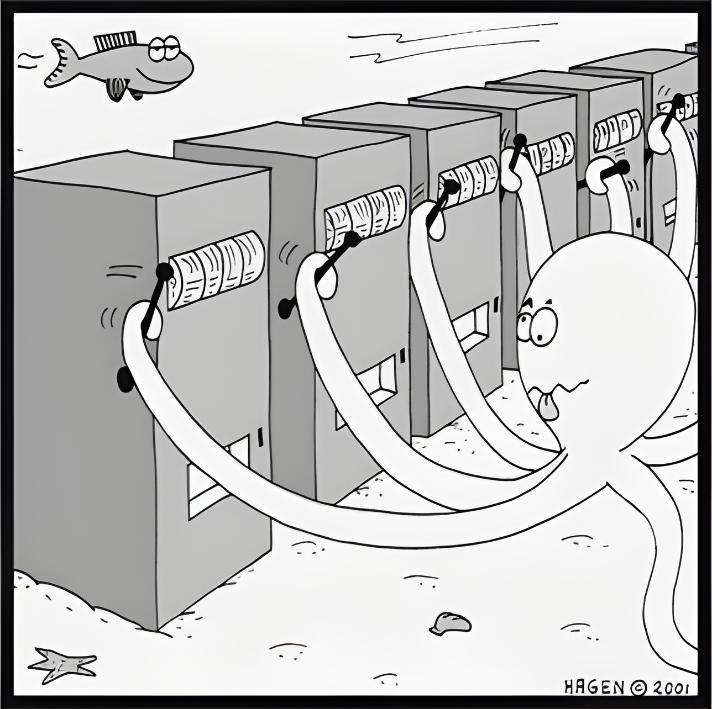

flowchart LR
P(P) --> N(NP)
N --> S(PSPACE)
P --> B(BPP)
B --> Q(BQP)
Q --> S
Bandittisme og kvantagenter
Plan
Idk
- Banditter
- Kvantemaskiner
- Kvantbanditter
- Tester
- Konklusjoner
Banditter
Spillet
- Gitt
- \(k\) «armer», tidshorisont \(T\).
- Ukjent
- belønningsfordelinger \(p_1, \dots, p_k\).
- Antatt
- \(p_a\) tilhører en gitt klasse \(\mathcal{P}\).
- Regler
-
for hver runde \(t=1, \dots, T\):
velg arm \(a_t \in \{1, \dots, k\}\)
motta belønning \(X_a \sim p_a\). - Målet
- maksimer \(\mathbb{E}\left[\sum_{t=1}^T X_t\right]\).
Utnyttelse versus utforsking
- Dra i den beste arm (kan være feil)
- Prøve andre armer (kaster bort tid)

Anvendelser
- Reklame på nett
- Kliniske tester
- Design av nettsider
- Investeringer
- Anbefalingssystemer
- Dynamisk prising
- Oppgavedelegering
- …


Klassiske strategier
- Ren utforskning
- Ren utnyttelse
- \(\epsilon\)-grådig
- UCB
- Thompson sampling
Kvantemaskiner
| Kvantealgoritme | Problem | Kompleksitet | Beste klassiske |
|---|---|---|---|
| Grover | Ustrukturert søk | \(O(\sqrt{N})\) | \(O(N)\) |
| Shor | Faktorisering | \(O( \log(N)^3)\) | Subeksponensiell |
| QFT | Fouriertransformasjon | \(O(\log(N))\) | \(O(n 2^N))\) |
| HHL | Lineære ligningssystemer | \(O(\log(N)\kappa^2)\) | \(O(N\kappa)\) |
| QMC | Estimere \(\mathbb{E}[X]\) | \(O(1/\epsilon)\) | \(O(1/\epsilon^2)\) |
Kvante-UCB
- Ide: bruk QMC til å estimere \(\mathbb{E}[X_i]\).
- Fordel: konfidensintervaller blir mindre
- Resultat: \(O(\log(T))\)-algoritme
Simuleringer
K
Konklusjoner
- Bedre i noen tilfeller
- Juks med kvante
- Vanskelig å anvende
- Kan videreutvikles